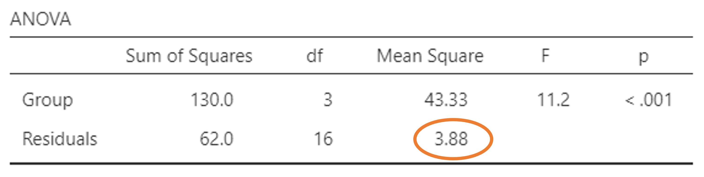
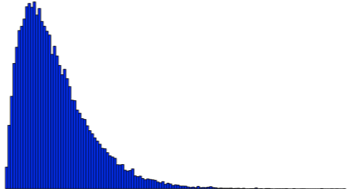
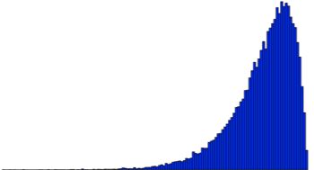
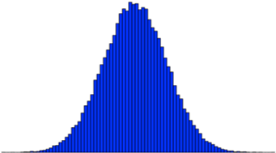
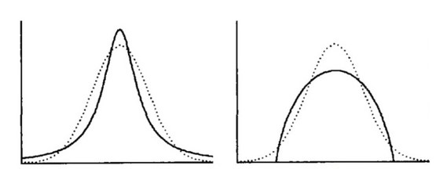

2 Contrasts 분석
2.1 Contrasts에 대해 알아보자
2.1.1 Constrasts란 무엇인가?
우리는 앞서 ANOVA에서 F-value가 유의하면 사후검정을 한다고 했습니다. 그런데 만약 사후검정 말고 다른 방법이 있다면 어떨까요? 다음을 보기 바랍니다.
만약, 수능 모의 수학시험을 고3학생, A대학의 수학과, 화학과, 영문학과, 그리고 역사학과 1학년 학생을 대상으로 실시했다면, 일반적인 ANOVA의 통계적 가설은 어떻게 될까요?
\[ H_0: \mu_{고3} = \mu_{수학과} = \mu_{화학과} = \mu_{영문학과} = \mu_{역사학과} \] \[ H_a: \text{5개 그룹의 수학 모의고사 점수 중 적어도 한 그룹의 점수는 다르다}\]
그런데, 만약 우리가 관심을 갖는 가설이 위와 같은 일반적인 ANOVA의 가설이 아닌 아래와 같은 가설이라면 어떻게 해야 할까요?
- 고3 학생의 수학점수는 다른 네 그룹의 수학점수의 평균과 다르다.
- 이공계 학과(수학과, 화학과) 신입생의 수학성적이 인문계 학과(영문학과, 역사학과) 신입생의 수학성적과 다르다.
- 수학과 신입생의 수학성적이 화학과 신입생의 수학성적과 다르다.
- 영문학과 신입생의 수학성적이 역사학과 신입생의 수학성적과 다르다.
위의 새로운 가설 중 마지막 두 개는 t-test로 해결할 수도 있으나 앞의 두 개는 여태 우리가 배운 것으로는 해결이 불가능합니다. 또한 기존의 F-value의 결과나 사후검정으로는 위의 질문에 대한 답을 완벽하게 하기 어렵습니다. 이러한 류의 가설을 검증하기 위한 방법이 바로 Contrasts Analysis입니다. 사실 대부분의 통계책에서는 그다지 심도 있게 다루지 않기도 하고 많은 사회과학에서도 이 방법을 그다지 많이 쓰지는 않습니다. 그러나 사실 이 방법만이 가진 장점이 바로 위의 가설과 같은 전혀 다른 종류의 가설 검증이 가능하다는 것이기 때문에 저는 개인적으로 공부를 좀 해뒀던 편입니다. 문제는 저 조차도 마음으로는 이걸 좀 어디에 써 봐야겠다는 생각만 10여 년째 할뿐 아직까지는 논문에 적용하지 못하고 있기는 합니다. 일단 좀 더 자세하게 알아봅시다.
2.1.2 Contrasts를 사용한 통계적 가설
위의 네 가지 예를 사용해 contrasts를 이용한 통계적 가설을 만들어 봅시다. 우선 다섯 그룹은 아래의 표와 같이 나누기로 합니다.
| 고3 | 수학과 | 화학과 | 영문학과 | 역사학과 |
|---|---|---|---|---|
| \(\mu_1\) | \(\mu_2\) | \(\mu_3\) | \(\mu_4\) | \(\mu_5\) |
- 고3 학생의 수학점수는 다른 네 그룹의 수학점수의 평균과 다르다.
이 경우 고3 학생의 평균은 \(\mu_1\)이 되고, 나머지 네 그룹의 평균은 \(\frac{\mu_2+\mu_3+\mu_4+\mu_5}{4}\)가 되므로 통계적 가설은 다음과 같습니다.
\[ H_0: \mu_1 = \frac{\mu_2+\mu_3+\mu_4+\mu_5}{4} \] \[ H_a: \mu_1 \ne \frac{\mu_2+\mu_3+\mu_4+\mu_5}{4} \]
이렇게 됩니다. 좀 이해가 되시나요? 이제 두번째 가설을 봅시다.
- 이공계 학과(수학과, 화학과) 신입생의 수학성적이 인문계 학과(영문학과, 역사학과) 신입생의 수학성적과 다르다.
이 가설을 contrasts를 이용한 통계적 가설로 바꾸면 아래와 같습니다.
\[ H_0: \frac{\mu_2+\mu_3}{2} = \frac{\mu_4+\mu_5}{2} \] \[ H_a: \frac{\mu_2+\mu_3}{2} \ne \frac{\mu_4+\mu_5}{2} \]
이제 좀 더 이해가 되시죠? 나머지 둘은 사실 매우 쉽습니다.
- 수학과 신입생의 수학성적이 화학과 신입생의 수학성적과 다르다.
\[ H_0: \mu_2 = \mu_3 \] \[ H_a: \mu_2 \ne \mu_3 \]
- 영문학과 신입생의 수학성적이 역사학과 신입생의 수학성적과 다르다.
\[ H_0: \mu_4 = \mu_5 \] \[ H_a: \mu_4 \ne \mu_5 \]
2.1.3 Contrasts란?
일반적으로 contrasts란 특정한 비교를 위한 평균의 가중값으로 쉽게 말해 가중평균을 이용한 분석입니다. 모집단의 평균값(\(\mu\))을 이용하여 contrasts 분석을 할 경우 아래와 같이 표현할 수 있습니다.
\[ \Psi = \sum_{i=1}^a c_i\mu_i = c_1\mu_1 + c_2\mu_2 + c_3\mu_3 + \cdots + c_i\mu_i \]
만약 표본/샘플의 평균값(\(\bar{X_i}\))을 이용하는 경우는 이렇게 표현됩니다.
\[ \hat{\Psi} = \sum_{i=1}^a c_i\bar{X_i} = c_1\bar{X_1} + c_2\bar{X_2} + c_3\bar{X_3} + \cdots + c_i\bar{X_i} \]
위의 식에서 \(c_i\)가 바로 contrasts입니다. 그렇다면 이걸로 어떻게 하라는 것일까요? 앞의 4개의 예제를 사용하여 선형조합의 contrasts를 만들어 보겠습니다. 단, \(c_i\) 는 그룹의 개수와 동일해야 하고, 모든 contrasts인 \(c_i\) 의 합은 “0” 이어야 합니다.
2.1.4 연구가설 - 통계적 가설 - Contrasts
그렇다면 이제 앞의 예제들을 하나씩 연구가설, 통계적 가설 그리고 Contrasts까지 한꺼번에 묶어서 정리해 보겠습니다.
연구가설 1: 고3 학생의 수학점수는 다른 네 그룹의 수학점수의 평균과 다르다.
통계적 가설 1: \[ H_0: \mu_1 = \frac{\mu_2+\mu_3+\mu_4+\mu_5}{4} \] \[ H_a: \mu_1 \ne \frac{\mu_2+\mu_3+\mu_4+\mu_5}{4} \]
Contrasts: \[ \Psi_1 = \mu_1 - \frac{1}{4}\mu_2 - \frac{1}{4}\mu_3 - \frac{1}{4}\mu_4 - \frac{1}{4}\mu_5 \] \[ c = (1, -\frac{1}{4}, -\frac{1}{4}, -\frac{1}{4}, -\frac{1}{4}) \]
좀 복잡해 보이긴 하지만 전체적으로 일관된 부분이 분명합니다. 두번째는 아래와 같습니다.
연구가설 2: 이공계 학과(수학과, 화학과) 신입생의 수학성적이 인문계 학과(영문학과, 역사학과) 신입생의 수학성적과 다르다.
통계적 가설 2: \[ H_0: \frac{\mu_2+\mu_3}{2} = \frac{\mu_4+\mu_5}{2} \] \[ H_a: \frac{\mu_2+\mu_3}{2} \ne \frac{\mu_4+\mu_5}{2} \]
Contrasts: \[ \Psi_2 = \frac{1}{2}\mu_2 + \frac{1}{2}\mu_3 - \frac{1}{2}\mu_4 - \frac{1}{2}\mu_5 \] \[ c = (0, \frac{1}{2}, \frac{1}{2}, -\frac{1}{2}, -\frac{1}{2}) \]
세 번째는 아래와 같습니다.
연구가설 3: 수학과 신입생의 수학성적이 화학과 신입생의 수학성적과 다르다.
통계적 가설 3: \[ H_0: \mu_2 = \mu_3 \] \[ H_a: \mu_2 \ne \mu_3 \]
Contrasts: \[ \Psi_3 = \mu_2 - \mu_3 \] \[ c = (0, 1, -1, 0, 0) \]
마지막 네 번째는 다음과 같습니다.
연구가설 4: 영문학과 신입생의 수학성적이 역사학과 신입생의 수학성적과 다르다.
통계적 가설 4: \[ H_0: \mu_4 = \mu_5 \] \[ H_a: \mu_4 \ne \mu_5 \]
Contrasts: \[ \Psi_4 = \mu_4 - \mu_5 \] \[ c = (0, 0, 0, 1, -1) \]
이제 우리는 Contrasts가 무엇인지 알게 되었습니다. 좀 독특한 가설을 검증하기 위해 사용할 수 있는 나름 꽤 유용한 도구인 셈이지요. 그렇다면 이제 Contrasts의 종류에 대해 알아보겠습니다. 이제부터는 다소 심화학습같은 느낌입니다. 잘 이해가 안되더라도 너무 신경쓰지 않으셔도 됩니다.
2.2 Contrasts의 종류
2.2.1 Type of contrasts
사실 이 부분은 좀 어렵습니다. 저도 어려워서 처음에 많이 힘들어 했습니다. 그러니 여러분들은 너무 스트레스 받으실 필요는 없습니다. 일단 세 가지 종류의 contrasts가 있습니다.
- Pairwise contrasts
- Complex contrasts
- Orthogonal contrasts
하나씩 알아보겠습니다.
2.2.2 Pairwise contrasts
두 개 그룹의 평균을 비교할 때 사용하는 contrasts로서 두 개를 Pair라고 보기 때문에 이런 이름이 되었습니다. 그러므로 한 개의 contrast는 “1”, 다른 한 개의 contrast는 “-1”로 설정합니다. 만약 총 a개의 그룹이 있다면 \(a \times (a-1) \div 2\)개의 pair가 존재합니다. 위에서 보았던 마지막 두 개의 가설이 이 경우에 해당됩니다.
연구가설: 수학과 신입생의 수학성적이 화학과 신입생의 수학성적과 다르다.
Contrasts: \(\Psi_3 = \mu_2 - \mu_3\), \(c = (0, 1, -1, 0, 0)\)
연구가설: 영문학과 신입생의 수학성적이 역사학과 신입생의 수학성적과 다르다.
Contrasts: \(\Psi_4 = \mu_4 - \mu_5\), \(c = (0, 0, 0, 1, -1)\)
2.2.3 Complex contrasts
두 개 이상의 그룹의 평균을 비교할 때 사용하는 contrasts로서 목적이나 상황에 따라 무한개의 contrasts를 만들 수 있습니다. 위에서 보았던 처음 두 개의 가설이 이 경우에 해당한다고 볼 수 있습니다.
연구가설: 고3 학생의 수학점수는 다른 네 그룹의 수학점수의 평균과 다르다.
Contrasts: \(\Psi_1 = \mu_1 - \frac{1}{4}\mu_2 - \frac{1}{4}\mu_3 - \frac{1}{4}\mu_4 - \frac{1}{4}\mu_5\), \(c = (1, -\frac{1}{4}, -\frac{1}{4}, -\frac{1}{4}, -\frac{1}{4})\)
연구가설: 이공계 학과(수학과, 화학과) 신입생의 수학성적이 인문계 학과(영문학과, 역사학과) 신입생의 수학성적과 다르다.
Contrasts: \(\Psi_2 = \frac{1}{2}\mu_2 + \frac{1}{2}\mu_3 - \frac{1}{2}\mu_4 - \frac{1}{2}\mu_5\), \(c = (0, \frac{1}{2}, \frac{1}{2}, -\frac{1}{2}, -\frac{1}{2})\)
사실상 Complex contrasts는 contrasts의 총합이 0이 되기만 한다면 어떤 조합도 허용됩니다. 예를 들면 아래의 경우도 허용됩니다.
- Contrasts: \(\Psi_k = {\small 0.01\mu_1 - 0.08\mu_2 - 0.98\mu_3 + 0.58\mu_4 + 0.47\mu_5},\\ \;\;\;\;\;\;{\small c = (0.01, -0.08, -0.98, 0.58, 0.47)}\)
그러나 이 경우 문제는 분석결과가 유의하게 나온다고 해도 해석이 안됩니다. 누가 봐도 그냥 아무 숫자나 넣어서 합이 0이되게 만들기만 한 것이기 때문입니다. 그르므로, 아무렇게나 하면 안됩니다. 분명한 이론이나 논리적 가설이 있고 이것을 바탕으로 contrasts가 만들어져야 합니다.
2.2.4 Orthogonal contrasts
Non-redundant contrasts 라고 부르기도 합니다. 이는 더이상 겹치거나 낭비되는 것이 없는 contrasts라는 의미입니다. 뒤에서 좀 더 자세하게 알아보겠습니다. 통계에서 “orthogonal”이란 직각, 겹치지 않는, 혹은 상관관계가 없다는 의미입니다. 의외로 자주 등장하는 개념이니 잘 기억해 두시길 바랍니다. 제가 미국에서 통계학과 수업을 들을 때, 교수님이 Orthogonal과 independent는 다르다는 이야기를 참 많이 강조했던 기억이 나네요. Orthogonal하다는 것은 상관관계가 없다는 것이지 상호 독립이란 의미는 아닙니다. 특히 Orthogonal은 서로 직각의 관계에 있다고 표현을 합니다. 뒤에서 계속 이런 것이 나올 것입니다.
다음은 orthogonal 하지 않은 예 입니다.
수학과 신입생의 수학점수가 고3 학생의 수학점수와 다르다.
Contrasts: \(\Psi_1 = \mu_2 - \mu_1\), \(c = (-1, 1, 0, 0, 0)\)
화학과 신입생의 수학점수가 고3 학생의 수학점수와 다르다.
Contrasts: \(\Psi_2 = \mu_3 - \mu_1\), \(c = (-1, 0, 1, 0, 0)\)
수학과 신입생의 수학점수가 화학과 신입생의 수학점수와 다르다.
Contrasts: \(\Psi_3 = \mu_2 - \mu_3\), \(c = (0, 1, -1, 0, 0)\)
이제 우리는 여기에 약간의 좀 복잡한 계산을 할 것입니다. 사실 덧셈, 뺄셈 수준이지만 최종 목적을 모르고서는 도대체 뭐하는 것인지 잘 이해가 되지 않을 수도 있습니다. 차근차근 보시기 바랍니다. 일단 시작은 위의 \(\Psi_1\)입니다. 위에서 \(\Psi_1 = \mu_2 - \mu_1\)였습니다. 이제 이 식에 \(\mu_3\)를 한 번 더하고 한 번 빼 보겠습니다. 한 번 더하고 한 번 뺀다는 것은 사실 원래의 식 자체에 아무런 변화를 주지 않는 것입니다. 이렇게 표현할 수 있습니다. \(\Psi_1 = \mu_2 - \mu_1 -\mu_3 + \mu_3\). 이제 이 식을 좀 다른 순서로 묶어 보겠습니다. \(\Psi_1 = (\mu_2 -\mu_3) + (\mu_3 - \mu_1)\). 이제 이 두 묶음은 위의 두 번째와 세 번째의 가설과 일치히므로 이렇게 결론 내릴 수 있습니다. \(\Psi_1 = (\mu_2 -\mu_3) + (\mu_3 - \mu_1) = \Psi_3 + \Psi_2\). 이렇게 된다는 것은 어떤 의미가 되냐면 만약 우리가 \(\Psi_3\)와 \(\Psi_2\)를 알고 있다면 이 둘을 더해서 자연스럽게 \(\Psi_1\)을 알 수 있다는 것입니다. 따라서 이렇게 되면 \(\Psi_1\)은 redundant하다고 보고 이 세 contrasts의 조합은 orthogonal하지 않다고 결론 내리게 됩니다.
2.2.5 Orthogonality란 무엇인가?
사실 설명이 다소 어렵기도 하고 오해의 소지도 있긴 합니다만 조심스럽게 설명해 보겠습니다.
첫 번째로 개별 contrast 상호 간에 독립인 경우를 의미합니다. 여기서 독립이란 한 두 개의 contrast 값을 알고 있을 때, 다른 contrast 값을 알 수 없어야 한다는 것을 의미합니다. 위에서 본 것처럼 예를 들어 두 개의 contrast 값의 조합으로 다른 contrast 값을 알 수 있다면 이 경우는 orthogonal 하지 않은 것이지요. 그리고 한 세트의 contrast들이 orthogonal 하다면 contrast의 계수는 상관관계가 0이 됩니다. 이 것은 두 개의 contrast가 공간상에서 직각일 경우를 의미하는데요 이를 계산하는 방법은 다음과 같습니다.
- 두 contrasts의 비교 개수가 동일 한 경우 (\(a = b\))
- \(\Psi_1 = (a_1, a_2, a_3, \ldots, a_n)\)
- \(\Psi_2 = (b_1, b_2, b_3, \ldots, b_n)\)
- \(a_1b_1 + a_2b_2 + a_3b_3 + \ldots + a_nb_n = 0\)
위의 마지막 계산식에서 최종적으로 0이 되면 두 contrasts는 orthogonal 합니다.
- 두 contrasts의 비교 개수가 다른 경우 (\(a < b\))
- \(\Psi_1 = (a_1, a_2, a_3, \ldots, a_a)\)
- \(\Psi_2 = (b_1, b_2, b_3, \ldots, b_b)\)
- \(\frac{a_1b_1}{n_1} + \frac{a_2b_2}{n_2} + \frac{a_3b_3}{n_3} + \ldots + \frac{a_ab_a}{n_a} = 0\)
이런 식이 됩니다. 일단 우리는 좀 쉬운 케이스 중심으로 예제를 진행해 보겠습니다.
- 예제 1: \(c_1 = (1, 0, -1)\), \(c_2 = (\frac{1}{2}, -1, -\frac{1}{2})\)
- \(\sum a_nb_n = (1 \times \frac{1}{2}) + (0 \times -1) + (-1 \times \frac{1}{2}) = \frac{1}{2} + 0 - \frac{1}{2} = 0\)
- \(c_1 \bot c_2\)
- 예제 2: \(c_3 = (0, 1, -1)\), \(c_2 = (-1, \frac{1}{2}, \frac{1}{2})\)
- \(\sum a_nb_n = (0 \times -1) + (1 \times \frac{1}{2}) + (-1 \times \frac{1}{2}) = 0 + \frac{1}{2} - \frac{1}{2} = 0\)
- \(c_3 \bot c_4\)
- 예제 3: \(c_5 = (1, -1, 0)\), \(c_6 = (1, 0, -1)\)
- \(\sum a_nb_n = (1 \times 1) + (-1 \times 0) + (0 \times -1) = 1 + 0 + 0 = 1\)
- \(c_3\) 와 \(c_4\)는 상호간 orthogonal 하지 않다.
- 예제 4: \(c_1 = (1, -1, 0, 0)\), \(c_2 = (1, 1, -2, 0)\), \(c_3 = (1, 1, 1, -3)\)
- \(\sum c_{1i}c_{2i} = (1 \times 1) + (-1 \times 1) + (0 \times -2) + (0 \times 0) = 1 - 1 + 0 + 0 = 0\)
- \(\sum c_{1i}c_{3i} = (1 \times 1) + (-1 \times 1) + (0 \times 1) + (0 \times -3) = 1 - 1 + 0 + 0 = 0\)
- \(\sum c_{2i}c_{3i} = (1 \times 1) + (1 \times 1) + (-2 \times 1) + (0 \times -3) = 1 + 1 - 2 + 0 = 0\)
- 그러므로 \(c_1 \bot c_2\), \(c_1 \bot c_3\), \(c_2 \bot c_3\)
- 따라서 모든 세트가 서로 orthogonal 하다.
이론적으로는 n개의 그룹이 한 변수 안에 있을 경우 n-1개의 orthogonal contrasts가 있다고 합니다. 만약 이 개수를 넘으면 그 중에 redundancy가 있다는 의미가 되는 것이지요. 하지만 테스트 가능한 contrasts는 모두 orthogonal 해야할 필요는 없습니다. 그렇다면 왜 자꾸 orthogonal contrasts를 강조할까요? 이유는 간단합니다. orthogonal contrasts의 경우 이점이 있기 때문입니다.
만약 우리가 orthogonal contrasts를 만들었다면, contrasts의 개수는 아마도 k-1개 (k는 그룹의 개수)가 될 것이고 이 경우 F-value의 계산에 사용되는 \(SS_{Between}\)이 k-1개의 \(SS_{contrasts}\)로 분할 가능하기 때문입니다. 즉, 이런 식으로 되는 것입니다.
- \(SS_{Between} = SS_{contrast1} + SS_{contrast2} + SS_{contrast3} + \ldots + SS_{contrastk-1}\)
- 앞서 우리는 \(SS_{Between}\)을 \(df_1\)으로 나눌 때, 자유도가 k-1이었음을 감안하면,
- 이는 위의 \(SS_{Between}\)은 k-1개의 \(SS_{contrasts}\)의 합이 됩니다.
- 여기서 1이 빠지는 이유는 그 빠진 1이 비교대상인 reference group이기 때문입니다.
이제 기본적인 contrasts에 대한 공부는 끝났습니다. 이제 본격적으로 분석을 해보도록 합시다.
2.3 Contrasts의 유의성을 테스트해 보자
2.3.1 Contrasts test 예제
다음은 우리가 테스트 해볼 아주 작은 사이즈의 예제입니다. 다음의 표(Table 2.2)에는 데이터가 정리되어 있습니다.
| Group | Constant | Frequent | Infrequent | Never |
|---|---|---|---|---|
| 보상방법 | (100% 보상) | (66% 보상) | (33% 보상) | (0% 보상) |
| 1 | 12 | 9 | 15 | 17 |
| 2 | 13 | 10 | 16 | 18 |
| 3 | 11 | 9 | 17 | 12 |
| 4 | 12 | 13 | 16 | 18 |
| 5 | 12 | 14 | 16 | 20 |
| Mean | 12 | 11 | 16 | 17 |
아동의 학습에 있어 보상의 역할을 알기 위해 아동 학습에 보상을 다르게 주고, 몇 번 만에 문제를 해결하는지 알기 위해 실험을 하였습니다. 총 4 개의 그룹으로 나누어 보상의 수준을 다르게 하였고, 각 그룹별로 5명의 아이들을 실험에 참가하게 하여 결과를 정리했습니다. Table 2.2 의 마지막 열(row)에는 각 그룹별 평균값이 나타나 있습니다.
이제 우리는 다음의 세 개의 연구가설을 검증해 볼 것입니다.
- Constant(100%) 보상 그룹은 다른 보상 그룹들의 평균보다 학습시간이 더 빠르다.
- Frequent(66%) 보상 그룹은 Infrequent(33%) 보상 그룹이나 Never(0%) 보상그룹에 비해 학습시간이 더 빠르다.
- Infrequent(33%) 보상 그룹은 Never(0%) 보상 그룹에 비해 학습시간이 더 빠르다.
결국 전반적으로는 보상을 더 자주 해주는 그룹의 아동들의 학습시간이 더 빠를 것이라는 예상을 하고 이를 위의 세 가지 가설로 만들어 검증하고자 하는 것입니다. 이제 이 검증방법의 프로세스를 정리해 보면 아래와 같습니다.
- 연구가설을 contrasts로 바꾼다.
- Contrasts가 orthogonal한지 알아본다.
- 각 contrasts의 값을 계산한다.
- (omnibus) ANOVA를 통해 \(MS_{Within}\) 값을 구한다.
- 각 contrasts의 표준오차를 구한다.
- 각 contrasts의 t값 또는 F값을 구한다.
- df를 참고하여 값이 유의한지 확인한다.
앞에서 공부한 일원배치 혹은 이원배치 분산분석보다는 테스트 과정이 좀 복잡합니다. 하지만 하나씩 알아 봅시다.
2.3.2 Contrasts Test
- 연구가설을 contrasts로 바꾼다.
- 가설 1: Constant(100%) 보상 그룹은 다른 보상 그룹들의 평균보다 학습시간이 더 빠르다.
- Contrast: \(c_1 = (1, -\frac{1}{3}, -\frac{1}{3}, -\frac{1}{3})\)
- 가설 2: Frequent(66%) 보상 그룹은 Infrequent(33%) 보상 그룹이나 Never(0%) 보상그룹에 비해 학습시간이 더 빠르다.
- Contrast: \(c_2 = (0, 1, -\frac{1}{2}, -\frac{1}{2})\)
- 가설 3: Infrequent(33%) 보상 그룹은 Never(0%) 보상 그룹에 비해 학습시간이 더 빠르다.
- Contrast: \(c_3 = (0, 0, 1, -1)\)
- Contrasts가 orthogonal한지 알아본다.
- Contrasts: \(c_1 = (1, -\frac{1}{3}, -\frac{1}{3}, -\frac{1}{3})\), \(c_2 = (0, 1, -\frac{1}{2}, -\frac{1}{2})\), \(c_3 = (0, 0, 1, -1)\)
- \(c_1\) & \(c_2\): \(\sum c_{1i}c_{2i} = (1 \times 0) + (-\frac{1}{3} \times 1) + (-\frac{1}{3} \times -\frac{1}{2}) + (-\frac{1}{3} \times -\frac{1}{2}) = 0\): \(c_1 \bot c_2\)
- \(c_1\) & \(c_3\): \(\sum c_{1i}c_{3i} = (1 \times 0) + (-\frac{1}{3} \times 0) + (-\frac{1}{3} \times 1) + (-\frac{1}{3} \times -1) = 0\): \(c_1 \bot c_3\)
- \(c_2\) & \(c_3\): \(\sum c_{2i}c_{3i} = (0 \times 0) + (1 \times 0) + (-\frac{1}{2} \times 1) + (-\frac{1}{2} \times -1) = 0\): \(c_2 \bot c_3\)
- 그러므로 모든 contrasts 세트는 orthogonal 하다.
- 각 contrasts의 값을 계산한다.
- Contrasts: \(c_1 = (1, -\frac{1}{3}, -\frac{1}{3}, -\frac{1}{3})\), \(c_2 = (0, 1, -\frac{1}{2}, -\frac{1}{2})\), \(c_3 = (0, 0, 1, -1)\)
- \(\hat{\Psi_1} = \bar{X_1} - \frac{1}{3}\bar{X_2} - \frac{1}{3}\bar{X_3} - \frac{1}{3}\bar{X_4} = 12 - \frac{11}{3} - \frac{16}{3} - \frac{17}{3} = -2.667\)
- \(\hat{\Psi_2} = \bar{X_2} - \frac{1}{2}\bar{X_3} - \frac{1}{2}\bar{X_4} = 11 - \frac{16}{2} - \frac{17}{2} = -5.5\)
- \(\hat{\Psi_3} = \bar{X_3} - \bar{X_4} = 16 - 17 = -1\)
- (omnibus) ANOVA를 통해 \(MS_{Within}\) 값을 구한다.
- 여기서 (omnibus) ANOVA란 단순히 일원배치 분산분석을 의미합니다.
- 위의 Table 2.2 의 데이터를 Jamovi에 넣고 돌려보시기 바랍니다.
- 다만, 위의 테이블 모양대로 넣으면 분석이 안됩니다. 위의 숫자는 모두 종속변수이며, 5 개씩 독립변수를 만들어 주어야 합니다.
- Jamovi를 돌린 결과는 아래의 Figure 2.1 입니다.
- \(MS_{Within}\)값은 3.88입니다.

- 각 contrasts의 표준오차를 구한다.
- \(SE(\hat{\Psi_i}) = \sqrt{MS_{Within} \times \sum_i^k \frac{c_i^2}{n_i}}\)
- \(SE(\hat{\Psi_1}) = \sqrt{3.88 \times (\frac{1^2}{5}+\frac{(-\frac{1}{3})^2}{5}+\frac{(-\frac{1}{3})^2}{5}+\frac{(-\frac{1}{3})^2}{5})} = \sqrt{3.88 \times 0.267} = 1.0165\)
- \(SE(\hat{\Psi_2}) = \sqrt{3.88 \times (0+\frac{(1)^2}{5}+\frac{(-\frac{1}{2})^2}{5}+\frac{(-\frac{1}{2})^2}{5})} = \sqrt{3.88 \times 0.30} = 1.0782\)
- \(SE(\hat{\Psi_3}) = \sqrt{3.88 \times (0+0+\frac{(1)^2}{5}+\frac{(-1)^2}{5})} = \sqrt{3.88 \times 0.40} = 1.2450\)
- 각 contrasts의 t값 또는 F값을 구한다.
- \(t(\hat{\Psi_i}) = \frac{\sum_{i=1}^k c_i\bar{X_i}}{\sqrt{MS_{Within} \times \sum_{i=1}^k \frac{c_i^2}{n_i}}}\)
- \(t(\hat{\Psi_1}) = -2.667 \div 1.0165 = -2.6237\)
- \(t(\hat{\Psi_2}) = -5.5 \div 1.0782 = -5.1011\)
- \(t(\hat{\Psi_3}) = -1 \div 1.2450 = -0.0832\)
- 여기서 \(df = N - k = 20 - 4 = 16\)이고 t-table에서 c.v.는 2.120 이므로
- \(|t(\hat{\Psi_1})| > 2.120 \rightarrow \text{p-value} < 0.05\)
- \(|t(\hat{\Psi_2})| > 2.120 \rightarrow \text{p-value} < 0.05\)
- \(|t(\hat{\Psi_3})| < 2.120 \rightarrow \text{p-value} > 0.05\)
- 그러므로 첫 번째와 두 번째 contrast는 유의하지만 세 번째 contrast는 유의하지 않다.
만약, 이 테스트를 F-value를 이용할 경우
- \(SS(\hat{\Psi_i}) = \frac{\hat{\Psi_i}^2}{\sum_{i=1}^k \frac{c_i^2}{n_i}}\)
- \(SS(\hat{\Psi_1}) = \frac{(-2.667)^2}{\frac{1^2}{5}+\frac{(-\frac{1}{3})^2}{5}+\frac{(-\frac{1}{3})^2}{5}+\frac{(-\frac{1}{3})^2}{5}} = 26.67\)
- \(SS(\hat{\Psi_2}) = \frac{(-5.5)^2}{0+\frac{1^2}{5}+\frac{(-\frac{1}{2})^2}{5}+\frac{(-\frac{1}{2})^2}{5}} = 100.83\)
- \(SS(\hat{\Psi_3}) = \frac{(-1)^2}{0+0+\frac{1^2}{5}+\frac{(-1)^2}{5}} = 2.5\)
- 위의 Figure 2.1 을 정리한 표는 아래와 같다.
| SS | df | MS | F | |
|---|---|---|---|---|
| Between | 130 | 3 | 43.33 | 11.2 |
| Within | 62 | 16 | 3.88 |
- 이제 여기의 \(SS_{Between}\)을 contrast 세 개로 쪼개보겠습니다. 이게 가능한 이유는 우리가 계산한 \(SS_{contrast}\) 세 개의 합이 \(SS_{Between}\)이 되기 때문입니다.
| SS | df | MS | F | |
|---|---|---|---|---|
| Between | 130 | 3 | 43.33 | 11.2 |
| \(\hat{\Psi_1}\) | 26.67 | 1 | 26.67 | 6.882 |
| \(\hat{\Psi_2}\) | 100.83 | 1 | 100.83 | 26.021 |
| \(\hat{\Psi_3}\) | 2.5 | 1 | 2.5 | 0.645 |
| Within | 62 | 16 | 3.88 |
- 위에서 보듯이 orthogonal contrasts가 되면 이렇게 df=1로 모든 contrasts를 쪼개어 사용할 수 있기 때문에 사실 orthogonality를 선호하는 것입니다.
이제 가장 어려운 부분은 끝났습니다. 조금만 더 힘을 내서 마무리해 봅시다.
2.4 Brand contrasts에 대해 알아보자
Brand contrasts란 이미 웬만한 통계 프로그램에 자동으로 들어간 contrasts를 말합니다. 이정도로 유명하다면 한 번 살펴볼 필요는 있다고 볼 수 있죠. 현재, Jamovi는 완전하게 개발된 상태입니다. 제가 유투브를 올릴 당시만해도 아직 정식버전이 아니었습니다. 그러나 여전히 우리가 앞 시간에 봤던 contrasts는 테스트가 불가능합니다. 물론, 돈 주고 사야하는 다른 통계 프로그램들에서는 가능합니다. 솔직히 저도 아주 오래전에 SAS에서 해보고는 오랫동안 해보지는 않았네요. 하지만, 이 Brand contrasts는 Jamovi에서도 가능합니다. 그래서 이번에는 Jamovi를 기준으로 Brand contrasts를 하나씩 알아보겠습니다.
- Deviation contrasts
- 한 그룹의 평균을 전체 평균과 비교하는 방법
- Non-orthogonal contrasts
- 예를 들면, \(\mu_1 = \frac{\mu_1+\mu_2+\mu_3+\mu_4}{4} \rightarrow c = (-\frac{3}{4}, \frac{1}{4}, \frac{1}{4}, \frac{1}{4})\)
- \(c_1 = (-\frac{3}{4}, \frac{1}{4}, \frac{1}{4}, \frac{1}{4})\)
- \(c_2 = (\frac{1}{4}, -\frac{3}{4}, \frac{1}{4}, \frac{1}{4})\)
- \(c_3 = (\frac{1}{4}, \frac{1}{4}, -\frac{3}{4}, \frac{1}{4})\)
- \(c_1\) & \(c_2\) = \((-\frac{3}{4} \times \frac{1}{4})+(\frac{1}{4} \times -\frac{3}{4})+(\frac{1}{4} \times \frac{1}{4})+(\frac{1}{4} \times \frac{1}{4}) \ne 0\)
- \(c_1\) & \(c_3\) = \((-\frac{3}{4} \times \frac{1}{4})+(\frac{1}{4} \times \frac{1}{4})+(\frac{1}{4} \times \frac{1}{4})+(\frac{1}{4} \times -\frac{3}{4}) \ne 0\)
- \(c_2\) & \(c_3\) = \((\frac{1}{4} \times \frac{1}{4})+(-\frac{3}{4} \times \frac{1}{4})+(\frac{1}{4} \times \frac{1}{4})+(\frac{1}{4} \times -\frac{3}{4}) \ne 0\)
- Simple contrasts
- 가장 마지막 그룹(레벨)을 비교기준(reference group)으로 하여 비교하는 방법
- Non-orthogonal contrasts
- \(c_1 = (1, 0, 0, -1)\)
- \(c_2 = (0, 1, 0, -1)\)
- \(c_3 = (0, 0, 1, -1)\)
- \(c_1\) & \(c_2\) = \((1 \times 0)+(0 \times 1)+(0 \times 0)+(-1 \times -1) = 1\)
- \(c_1\) & \(c_3\) = \((1 \times 0)+(0 \times 0)+(0 \times 1)+(-1 \times -1) = 1\)
- \(c_2\) & \(c_3\) = \((0 \times 0)+(1 \times 0)+(0 \times 1)+(-1 \times -1) = 1\)
- Difference contrasts
- 한 그룹과 그 앞의 그룹들의 평균을 비교하는 방법
- Orthogonal contrasts with equal n
- \(c_1 = (-1, 1, 0, 0)\)
- \(c_2 = (-\frac{1}{2}, -\frac{1}{2}, 1, 0)\)
- \(c_3 = (-\frac{1}{3}, -\frac{1}{3}, -\frac{1}{3}, 1)\)
- \(c_1\) & \(c_2\) = \((-1 \times -\frac{1}{2})+(-1 \times \frac{1}{2})+(0×1)+(0×0) = 0\)
- \(c_1\) & \(c_3\) = \((-1 \times -\frac{1}{3})+(1 \times -\frac{1}{3})+(0 \times -\frac{1}{3})+(0×1) = 0\)
- \(c_2\) & \(c_3\) = \((-\frac{1}{2} \times -\frac{1}{3}) + (-\frac{1}{2} \times -\frac{1}{3}) + (1 \times -\frac{1}{3}) + ( 0 \times 1) = 0\)
- Helmert contrasts
- 한 그룹과 그 뒤의 그룹들의 평균을 비교하는 방법
- Orthogonal contrasts with equal n
- \(c_1 = (1, -\frac{1}{3}, -\frac{1}{3}, -\frac{1}{3})\)
- \(c_2 = (0, 1, -\frac{1}{2}, -\frac{1}{2})\)
- \(c_3 = (0, 0, 1, -1)\)
- \(c_1\) & $c_2 = \((1 \times 0) + (-\frac{1}{3} \times 1) + (-\frac{1}{3} \times -\frac{1}{2}) + (-\frac{1}{3} \times -\frac{1}{2}) = 0\)
- \(c_1\) & $c_3 = \((1 \times 0) + (-\frac{1}{3} \times 0) + (-\frac{1}{3} \times 1) + (-\frac{1}{3} \times -1) = 0\)
- \(c_2\) & $c_3 = \(( 0 \times 0) + (1 \times 0) + (-\frac{1}{2} \times 1) + (-\frac{1}{2} \times -1)\)
- Repeated contrasts
- 한 그룹과 바로 다음 그룹을 비교하는 방법
- Non-orthogonal contrasts
- \(c_1 = (1, -1, 0, 0)\)
- \(c_2 = (0, 1, -1, 0)\)
- \(c_3 = (0, 0, 1, -1)\)
- \(c_1\) & \(c_2\) = \((1 \times 0) + (-1 \times 1) + (0 \times -1) + (0 \times 0) = -1\)
- \(c_1\) & \(c_3\) = $(1 ) + (-1 ) + (0 ) + (0 ) = 0 $
- \(c_2\) & \(c_3\) = \((0 \times 0) + (1 \times 0) + (-1 \times 1) + (0 \times -1) = -1\)
- Polynomial trend contrasts
- 일종의 트랜드(경향성)을 보고자 할 경우 사용
- 독립변수 그룹의 순서가 있어야 함
- 예) 독립변수 = {10mg, 20mg, 30mg, 40mg} 투약의 양
- 독립변수의 그룹간 간격이 일정해야 함 (간격이 다르면 사용할 수 없음)
- 그룹내의 관찰값 n이 모두 동일해야 함(=equal n)
- Orthogonal contrasts
- \(c_{linear} = (-2, -1, 1, 2)\)
- \(c_{quadratic} = (1, -1, -1, 1)\)
- \(c_{cubic} = (-1, 2, -2, 1)\)
- \(c_1\) & \(c_2\) = \((-2 \times 1) + (-1 \times -1) + (1 \times -1) + (2 \times 1) = 0\)
- \(c_1\) & \(c_3\) = \((-2 \times -1) + (-1 \times 2) + (1 \times -2) + (2 \times 1) = 0\)
- \(c_2\) & \(c_3\) = \((1 \times -1) + (-1 \times 2) + (-1 \times -2) + (1 \times 1) = 0\)
간단하게 정리해 봤습니다. 이제 Jamovi를 통해 실습을 해보겠습니다.
2.5 Brand contrasts를 실습해 보자
앞서 계속 사용해 오던 동일한 데이터로 Jamovi에서 brand contrasts를 실습해 보겠습니다. 실습은 유투브를 이용해서 보실 것을 권해드립니다.
2.6 t-test와 ANOVA의 전제조건
2.6.1 정규성(Normality)
보통의 통계학 책이나 수업에서는 이런 내용을 t-test나 ANOVA를 배우기 전에 먼저 가르칩니다. 문제는 이 테스트가 무엇인지도 모르는 상황에서 전제조건 혹은 Assumption을 이야기하기 시작하면 도저히 통계를 따라가기가 어려워집니다. 물론 통계를 전공하는 분들이나 정통 통계를 하시는 분들에게는 정말 중요한 부분입니다. 하지만 우리처럼 통계 초보이면서 통알못이라면 정말 이건 외계어 중의 외계어가 될 것입니다. 그래서 저는 어느 정도 두 테스트를 다 공부한 후에 이 전제조건에 대해 설명합니다.
전제조건이란 쉽게 말해 우리가 t-test나 ANOVA를 하기 위해서 우리의 데이터가 혹은 변수가 당연히 가지고 있어야 하는 특성입니다. 이러한 특성이 담보되지 않는다면 원칙적으로는 이러한 테스트를 할 수 없습니다. 사실 문제는 거의 대부분의 경우 데이터나 변수가 이러한 전제조건을 모두 완벽하게 갖추고 있는 경우가 많지 않다는 것입니다. 일단 하나씩 알아보겠습니다. 여기서는 중요한 몇 가지 중심으로 알아보겠습니다.
- 정규성 (Normality)
- 정규성이란 데이터가 얼마나 정규분포처럼 생겼는가를 의미합니다.
- 다른 말로 정규분포를 잘 따른다고 표현하기도 합니다.
- 그렇다면, 정규분포를 잘 따른다는 것은 무슨 뜻일까요?
- 평균값을 기준으로 값들이 퍼져 있는 확률이 정규분포를 따른다는 뜻입니다.
- 즉, 평균값을 기준으로 \(\pm1 \times SD\)(표준편차)에 약 68.2%의 데이터가 퍼져 있고
- 평균값을 기준으로 \(\pm2 \times SD\)(표준편차)에 약 95.4%의 데이터가 퍼져 있고
- 평균값을 기준으로 \(\pm3 \times SD\)(표준편차)에 약 99.7%의 데이터가 퍼져 있다는 의미가 됩니다.
그런데 이러한 분포를 어떻게 확인할 수 있을까요?
변수의 정규성을 테스트 하는 방법은 대표적으로 다음의 두 가지가 있습니다. - Shapiro-Wilk Test: Jamovi 에 탑재 (다만 샘플사이즈가 클 경우 테스트하지 않음) - Kolmogorov–Smirnov test: Jamovi 에 탑재되어 있지 않음 - 위의 두 테스트 모두 만약 p-value가 유의하다면 (0.05보다 작을 경우) normal 하지 않다는 의미입니다. - 그러므로 정규성 테스트를 통과하려면 유의하지 않아야 합니다.
문제는 앞서 이야기 했듯이 대부분의 경우 정규성이 완벽하게 확보되는 경우가 드물다는 것입니다. 테스트 결과도 중요하지만 사실 테스트 이전에 히스토그램과 같은 그래프를 그려보는 것이 중요합니다. 너무 심각하게 이상한 분포를 보인다면 고민이 됩니다. 가끔 어떤 분들은 중심극한 정리를 이야기 하면서 n=30이상이면 문제가 없다고 말하긴 하는데 논리적으로 좀 이상한 이야기입니다. 사실 중심극한 정리 조차도 샘플의 사이즈가 커지면 문제가 없다는 의미가 아니라 샘플의 개수가 많아져야 한다는 개념인데 무조건 n=30 이상이면 문제가 없다는 식의 접근은 위험합니다.
- 왜도(skewness)-비대칭도
왜도란 비대칭도를 의미합니다. 좌측이든 우측이든 꼬리가 긴 경우 문제가 됩니다. 아래의 Figure 2.2 를 보면 첫 번째 Figure 2.2 (a) 는 꼬리가 우측으로 길게 늘어져 있습니다. 이 경우에는 median이 mean 보다 큰 상황이며 왜도는 양수가 됩니다. 일반적으로 어느 한 산업 내의 기업들의 매출 데이터를 보면 이런 경우가 많습니다. 예를 들어 미국의 레스토랑 상장기업의 매출 데이터를 모아보면 이런 형태를 보입니다. 왜냐하면 맥도날드, KFC 등과 같은 몇 개의 대규모 기업이 우측 끝 부분에 위치하기 때문입니다.



반면에 Figure 2.2 (b) 를 보면 꼬리가 좌측에 길게 늘어져 있습니다. 이 경우를 left-skew 하다고 표현하는데, median이 mean 보다 작은 경우이며 왜도는 음수를 나타냅니다. 마지막으로 정규성을 나타내는 경우는 Figure 2.2 (c) 입니다. 좌우의 대칭이 잘 이루어진 모습입니다.
- 첨도(kurtosis)
첨도란 데이터의 분포가 뾰족한 정도를 의미합니다. 분포의 중간이 뾰족한 경우 (Figure 2.3 좌측) 첨도값은 0보다 크고, 분포의 중간이 평평한 경우 (Figure 2.3 우측) 첨도값은 0보다 작아집니다. 만약 정규분포를 따른다면 첨도값은 0을 나타내게 됩니다.

2.6.2 분산의 동질성
분산의 동질성이란 분산(variance)가 집단별로 동일하다는 뜻으로 영어로는 homogeneity of variance라고 합니다. t-test나 ANOVA에서 가장 중요한 것이 바로 이 분산의 동질성인데, 이를 등분산성이라고 합니다. 등분산 가정이 깨질 경우 비교의 기준이 되는 표준편차 (혹은 분산)을 다시 생각해봐야 합니다. 분산의 동질성을 테스트하는 것이 바로 test for Homogeneity of Variances 혹은 Levene’s test라고 합니다. 이 테스트에서 p-value가 0.05보다 작아 유의할 경우, 이는 등분산 가정이 깨진 것을 의미합니다. 왜냐하면 유의하다는 것은 분산이 다르다는 의미이기 때문입니다.
문제는 이 등분산 가정이 깨질 경우입니다. 문제는 이론과 현실이 상당히 괴리감이 있다는 점입니다. 많은 경우 현실적인 리서치에서는 아주 심각한 수준의 문제가 아닌 한 적당히 넘어가는 경우가 많습니다. 사실 기준이 무엇이냐고 묻는 다면 답하기 어렵습니다. 분야마다 다르기 때문입니다. 예를 들면, 일반적으로 회계 데이터의 경우 대부분 변수가 양쪽으로 꼬리가 길게 늘어지는 경우가 많습니다. 이때 회계분야의 세계적인 저널들을 보면 자연스럽게 Winsorizing이란 것을 합니다. 찰스 윈저라는 전직 엔지니어였다가 생물통계학자로 이름을 날린 분이라고 합니다. 이 방법은 쉽게 말해 양쪽의 길게 늘어진 꼬리를 강제로 말아 올리는 방법입니다. 그런데, 재미있는 것은 같은 데이터라 하더라도 재무 분야에서는 상위 혹은 하위 5% 혹은 10%의 데이터를 trimming 하기도 합니다. Trim 이라는 것은 쉽게 말해 잘라서 버리는 것이지요. 이렇게 하는 이유는 우리가 사용하는 분석은 모두 평균과 표준편차를 이용하는 것인데, 이렇게 꼬리가 길어지는 변수의 경우 평균과 표준편차가 양쪽의 길게 늘어진 몇 개의 데이터로 인해 심각한 영향을 받기 때문입니다. 즉, 양쪽으로 길게 늘어진 데이터를 기본적으로 Outlier로 취급하는 것입니다.
그렇다면, 이러한 데이터를 Outlier로 결정하고 지우거나 (trimming) 혹은 말아 올리는 Winsorizing을 하는 것은 언제나 옳을까요? 이게 결정이 쉽지 않습니다. 다른 예를 들어보겠습니다. 미국의 상장기업 회계 데이터 중에서 레스토랑 기업의 매출(sales)를 변수로 끌어와서 들여다보면, 우측으로 길게 늘어진 모습을 볼 수 있습니다. 이러한 현상은 사실 매우 흔한 경우입니다. 만약 우리가 위의 예를 따라 잘라버리거나 말아 올리면 되는 것일까요? 문제는 도대체 누가 이 끝에 있어서 꼬리가 길어졌는지 자세히 보아야 한다는 점입니다. 이 데이터들은 대부분 맥도날드나 KFC 등과 같은 메가 사이즈의 외식기업들입니다. 만약 우리가 변수의 Outlier라는 명분으로 이들을 지우고 혹은 말아 올리고 분석을 하면 어떤 결과가 나올까요? 우리는 분명 레스토랑 산업의 상장기업을 분석했다고 하지만 결론적으로 레스토랑 기업의 대표주자인 맥도날드와 같은 대표 기업을 날려버리고 분석을 한 것입니다. 그렇다면 분석결과가 레스토랑 기업의 대표성을 여전히 지니고 있을까요? 아마도 아닐 것입니다. 따라서 어떠한 절대적 기준은 없습니다. 특히, 사회과학 데이터에서 Outlier를 함부로 결정하는 것은 매우 위험하다는 것이 제 생각입니다. 예를 들어 가장 흔하게 사용하는 Cook’s distance라는 Outlier Detection 방법은 실험 데이터에서는 유효하지만, 사회과학 데이터에서는 그렇게 보기 어렵습니다. 왜냐하면, 실험 데이터란 모든 조건을 동일하게 맞춰 놓은 상태에서 실험하여 얻은 것이므로 비정상적으로 나타나는 값은 Outlier라고 볼 수 있습니다. 그러나 맥도날드의 매출과 같은 경우는 그렇게 동일하게 판단하기 어렵습니다.
2.6.3 등분산 가정이 깨질 경우 대안
등분산 가정이 깨졌다면 대안이 있긴 합니다. 다음은 그 대안을 정리한 것입니다.
- 등분산 가정이 깨진 경우 t-test의 대안
- Welch test와 같은 대체 방법을 사용
- 경우에 따라서는 non-parametric test인 Mann-Whitney U test를 사용
- 등분산 가정이 깨진 경우 ANOVA의 대안
- Welch test와 같은 대체 방법 사용 가능
- Kruskal-Wallis와 같은 non-parametric test 사용 (단, One-way ANOVA 대용)
위에서 non-parametric test라는 것은 쉽게 말해 파라미터를 사용하지 않는 테스트란 뜻입니다. 여기서 파라미터는 대표적으로 평균이나 표준편차 같은 것을 의미합니다. 즉, 평균이나 표준편차와 같은 것을 사용하지 않는 분석방법이라는 뜻입니다. 어떤 학생들은 그렇다면 차라리 아예 t-test나 ANOVA를 하지 않고 이러한 non-parametric test를 하면 되지 않느냐고 질문하기도 하는데, 이는 매우 위험한 발상입니다. 이러한 방법은 쉽게 말해 대체 방법이지 우선적인 방법이 아닙니다. 검증능력이라는 점에 비추어 본다면 기존의 parametric test가 더 좋기 때문입니다. 보통 이런 non-parametric test는 데이터의 사이즈가 어쩔 수 없이 너무 작은 경우에 사용합니다. 예를 들어 희귀병이나 장애와 관련된 데이터의 경우 수집 가능한 데이터의 사이즈가 매우 작습니다. 실제로 10개 내외인 경우가 많습니다. 이런 경우는 데이터의 사이즈로 인해 사실상 평균이나 표준편차가 전혀 의미를 가질 수 없기 때문에 non-parametric test를 사용하는 것입니다. 이러한 경우가 아니라면 굳이 사용할 이유가 없습니다.
마지막으로 다른 방법이 있다면 변수의 분포를 조정하는 방법이 있습니다. 일반적으로 사용되는 몇 가지 방법이 있는데, 다음과 같습니다.
- 데이터의 normalization: 변수의 값을 그 변수의 (최대값 - 최소값)으로 나누는 방법
- 데이터의 standardization: 변수의 평균값을 빼고 표준편차로 나누는 방법
- 데이터의 log-transformation: 보통 우측으로 꼬리가 긴 경우에 사용하는 방법으로 변수에 자연 log를 붙이는 방법
위의 방법을 사용할 경우 변수가 달라지는 것 아니냐는 의문을 가질 수도 있지만 그렇지 않습니다. 다만 결과를 해석할 때 유의해야 합니다. 이와 관련해서는 뒤에 등장하는 회귀분석에서 보다 자세히 알아보겠습니다.
2.6.4 독립성
마지막으로 독립성에 대해 알아보겠습니다.
이는 사실 샘플 즉 표본을 모으는 방법과 많은 관련이 있습니다. 예를 들어 설문조사를 해서 표본을 모으고 이를 분석할 경우 어떻게 표본을 모았느냐는 매우 중요한 문제입니다. 예를 들어 설문조사를 주변의 아는 지인들에게만 하는 경우에는 모집된 표본이 모집단의 특성을 대표하지 못하는 상황이 나타납니다. 대표적으로 대학원생들이 설문조사를 할 때, 주변의 대학원생들에게 설문조사를 많이 요구합니다. 결국 데이터를 분석해 보면 교육정도가 일반적인 모집단의 수준에 비해 너무 높게 나타나는 경우를 봅니다. 사실 이렇게 되면 표본 자체가 편향(biased)되어 있다고 볼 수 있어 연구결과에 대한 의문을 제기할 수 있습니다. 또 다른 경우는 특히나 문제가 되는데, 설문조사가 어려워서 동일한 사람에게 설문을 두 개 혹은 세 개씩 해달라고 하는 경우입니다. 아무리 다르게 설문에 응답한다고 해도 이미 이러한 데이터는 객관성을 잃었을 뿐만 아니라, 한 개인이 여러 응답을 하여, 응답 간에 상당한 상관관계가 발생하여 분석 시에 심각한 문제가 발생합니다. 그래서 설문조사를 특정한 특징이 있는 집단에만 할 경우 문제가 되는 것입니다. 표본은 모집단의 특성을 충분히 잘 대표할 수 있어야 하는데, 이러한 조사는 데이터 자체가 이미 편향되어 결과에 문제가 생깁니다. 과거에 가장 문제가 된 경우가 바로 약의 효능검증에 관련된 연구들이었습니다. 심각하게는 인간의 목숨과 관련된 연구임에도 이러한 연구를 할 때, 투약 그룹과 비투약 그룹에 심각한 편차를 두고 연구를 한 경우가 있었습니다. 예를 들어 투약 그룹에는 젊고 상대적으로 건강한 사람들을 넣고, 비투약 그룹에 노약자 혹은 병이 심각하게 진전된 사람들을 넣음으로써 투약 효과를 비정상적으로 확대한 경우입니다. 그래서 최근에 지속적으로 등장하는 이슈가 바로 reproducible research입니다. 출판된 논문의 프로토콜을 따라할 경우 동일한 결과가 나와야 하는 것을 의미합니다. 이러한 것은 일종의 연구윤리와도 연계되어 있어 매우 중요한 이슈입니다.